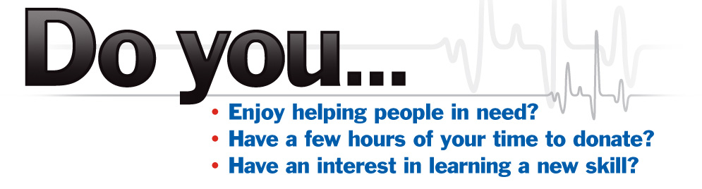
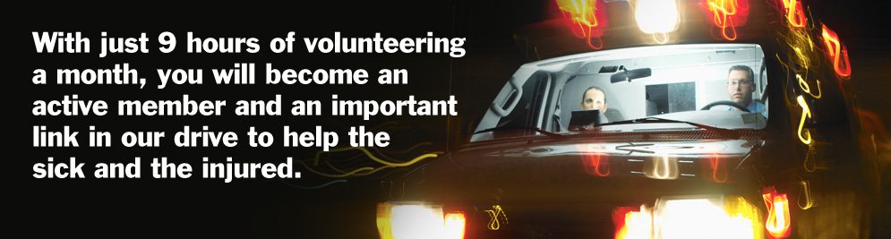

Volunteer:
You can become a VIP in your community by volunteering
with Victor-Farmington Volunteer Ambulance!
We have a need for new members to support our community. We are very flexible, and allow you to choose the days and hours you want to volunteer. If you can give just 9 hours a month, you will become an active member and an important link in our drive to help the sick and the injured. All training is provided by the Victor-Farmington Volunteer Ambulance Corps at no cost to you. We are a professional, friendly, and team-oriented organization. Join us and you will experience the camaraderie of our staff who all share the desire to help those in need.
Victor-Farmington Volunteer Ambulance provides a professional atmosphere with state of the art equipment and vehicles. Volunteering may benefit you in many ways. While many of its rewards will be personal in nature, you will earn respect from everyone who learns you are a volunteer. You will gain immense pride from your accomplishments and the knowledge and skills you acquire from your training. Strong friendships will develop and be maintained for a lifetime. Lastly, great satisfaction that comes from doing an important job well while contributing to caring, helping, and saving of life in your community
There are material rewards as well. The volunteer services are valued at every level of society, and there are a variety of incentives which include:
- New York State Income Tax Credit of $250 for each active member
- Member Point Incentive Program
- Internet Access – Work from the station while you volunteer
- Uniforms, Duty Boots, pagers, portable radios, & Vehicle Decals
- Free Medical Training for State Level Certifications – EMT-B, EMT-I, EMT-CC
- Free CME Training for ACLS, PALS, ATLS, AHLS, & Other related Courses
- Health checkups, Immunizations, & Annual Flu Shot
- Leadership – opportunities to serve in elected or appointed positions
- Annual Recognition Banquet
- Life & AD&D Insurance
Get Started by Downloading a Volunteer Application. This application is in Adobe PDF format. You must have Acrobat Reader installed in order to view this document. You can download Acrobat for free at Adobe.com. Membership Application
Volunteer Opportunities
Below are the volunteer opportunities we have available at this time. Please read the description of each volunteer opportunity listed below for information on training and volunteer details to develop a sense of which opportunity would be best for you!
Office Positions:
Dispatcher: Training takes about 25 hours. This includes standard first aid training. The importance of the dispatch position is the communications between the 911 Center and the ambulance crew. Basic office procedures of logging in calls received and calling in additional personnel as needed is part of this key position. Other duties include:
| • Communicating status of Hospitals | • Answering all communication equipment (Telephone & Radio) |
| • Recording crew hours | • Loaning equipment to community |
| • Securing prime duty & stand-by duty ambulance crews |
Field Positions:
Medic Assistant: Training takes about 25 hours. This includes CPR training. Our Medic Aides receive basic First Aid training, learn CPR skills, and become familiar with basic ambulance operations. You ride the ambulance and help the licensed EMT's with the care you've been trained to provide. An extra pair of hands is always needed!This position is the stepping stone that provides 'hands-on' training for ALL individuals who wish to continue their training into becoming an:
| • Ambulance Driver | • Charge Medic (Basic, Intermediate, Advanced) |
Driver: Training takes about 30 hours. Training includes Certified Emergency Vehicle Operations (CEVO II) as well as driving the ambulance under normal and emergency conditions with instructors. You will learn to drive "the rig" through hands-on training with experienced trainers. Driver training gives you the skills needed to get your crew and patient to the hospital safely. Training includes all the functions vehicle operation, equipment handling, and road safety.
Becoming a Safe Driver is important to our organization and community. Below is a brief summary of the qualifications required to begin training:
| • Standard First Aid card and FPR CPR card. (See Above) | • Be at least 21 years of age. |
| • Be a qualified dispatcher. (See Above) | • Have five (5) years of licensed driving experience, and a valid New York State license. |
| • Be a qualified Medic Aid or higher. (See Above) | • Complete & sign insurance company motor vehicle report authorization release form. |
Emergency Medical Technician – Basic: Requires formal New York State Certification as an EMT. The State course is approximately 120 hours of instruction. In addition, an EMT as Victor Farmington is required to complete our intern-training program, which requires about 20 hours of hands on skill demonstration and completing calls as an intern with a medic trainer. EMT's provide a basic level of care to manage illnesses, injuries, and possible life threatening situations. We pay for your books and cost of classes. Once you complete the course, you are issued a state medical license number. Victor-Farmington provides additional training to support you. You will never be left to act alone as we are a team oriented organization.
Emergency Medical Technician – Intermediate: The next step up in the level of care is the Intermediate medic. As an Intermediate you have all the skills of the basic EMT with an added skill for advanced airway management and being able to establish IV's.
Emergency Medical Technician – Advanced: Requires formal New York State Certification. Candidates must have served as an EMT for a minimum of one year prior to application into an advanced class. Additional class and clinical time for Critical Care requires about 480 hours. Additional class and clinical time for Paramedic requires about 1,000 hours. Many advanced technicians use the 'free' training to become employed within the emergency medical services industry. Employers such as, Hospitals, Ambulance Services, and Air Transports are continually looking for qualified individuals with a proven track record.
Again, your skills become more advanced with additional training. As a Critical Care or Paramedic (Advanced Life Support technician) you have all the skills of the EMT and the Intermediate medics. You now add to your intermediate knowledge and are able to administer medications / drugs to your patient as needed prior to arriving at the hospital. In addition, the Advanced Life Support Technicians has additional tools which include 12 lead EKG's and Advanced Cardiac Life Support.